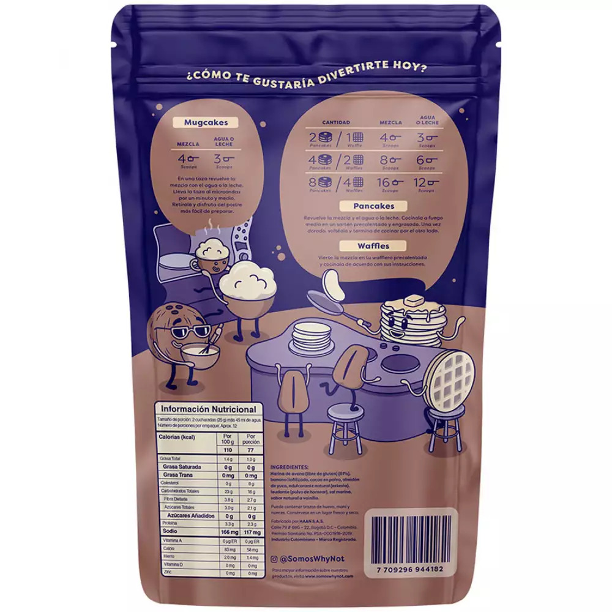

Examples
Wheat bread
 whole wheat bread
whole wheat bread
| Total carbohydrate | Dietary fiber |
| 31g | 12g |
Consider subtracting the grams of fiber from the total carbohydrates. So:
Count this product as 19 grams of carbohydrates (31-12=19).
Pancake mix

pancake mix